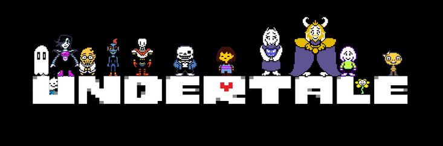

Overview
Purpose
The purpose of this website is to showcase why Undertale is considered one of the most unique and beloved indie games of all time. The website will explore its storytelling, gameplay mechanics, music, and emotional impact on players.
Audience
The intended audience includes gamers who are curious about Undertale, fans of indie games, and anyone interested in learning what makes a video game memorable and meaningful.
Branding
Website Logo
Style Guide
Color Palette
Palette URL:
https://coolors.co/092c51-000000-a42212-ffffff| Primary | Secondary | Accent 1 | Accent 2 |
|---|---|---|---|
| [#092C51] | [#000000] | [#A42212] | [#FFFFFF] |
Typography
Heading Font: Bold Font
Paragraph Font: Italic Font
Normal paragraph example
Undertale is a one-of-a-kind indie RPG where your choices truly matter.
Colored paragraph example
With its unforgettable characters, emotional storytelling, and hauntingly beautiful soundtrack, Undertale has left a lasting impact on the gaming world.
Navigation
Site Map
Wireframes
Home
Story & Characters
Why the Story Matters: Undertale’s story is what truly makes it memorable. The game starts with a child who falls into the Underground, a world filled with monsters. From this point, players can choose how they interact with every character—either through violence or kindness. The consequences of these choices create emotional depth rarely seen in games. Character Development: Every major character is well-developed and meaningful. Players meet Papyrus, a silly skeleton who wants to join the Royal Guard; Sans, who hides depth behind his jokes; and Toriel, who acts as a mother figure. Your choices affect how they treat you and how the game ends. Emotional Connection: The way Undertale makes you feel responsible for the emotional outcome sets it apart. Many players remember the emotional weight more than the gameplay itself.
Gameplay & Music
Unique Combat: Undertale features a unique combat system where you can attack or resolve conflict peacefully. In real-time, players dodge attacks using mini-games and patterns. This system keeps the player engaged in both gameplay and morality. Player Choice: Actions have long-lasting effects—even if you restart the game. Undertale remembers what you did. This creates a meta-layer of storytelling unlike most RPGs. Iconic Soundtrack: Toby Fox’s soundtrack is one of the most iconic in indie gaming. Songs like “Megalovania,” “Hopes and Dreams,” and “His Theme” are instantly recognizable. The soundtrack enhances every mood and is part of why fans love and remember the game.
Image Planning
Home Page Images
- Undertale logo (used above)
- Main character in Underground (screenshot)
Story & Characters Page Images
- Collage of main characters (Sans, Papyrus, Toriel, etc.)
- Screenshot of emotional scene (e.g., ending scene)
Gameplay & Music Page Images
- Screenshot of battle screen
- Image or illustration of “Megalovania” moment